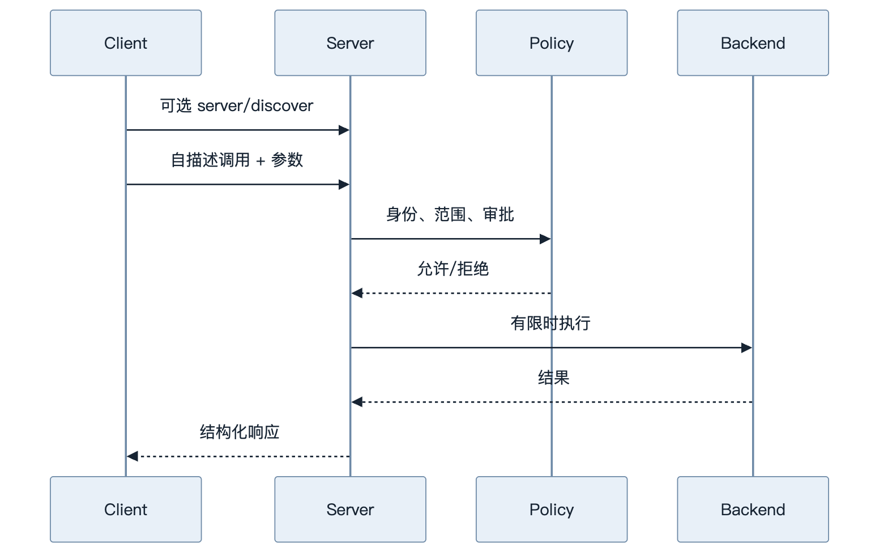
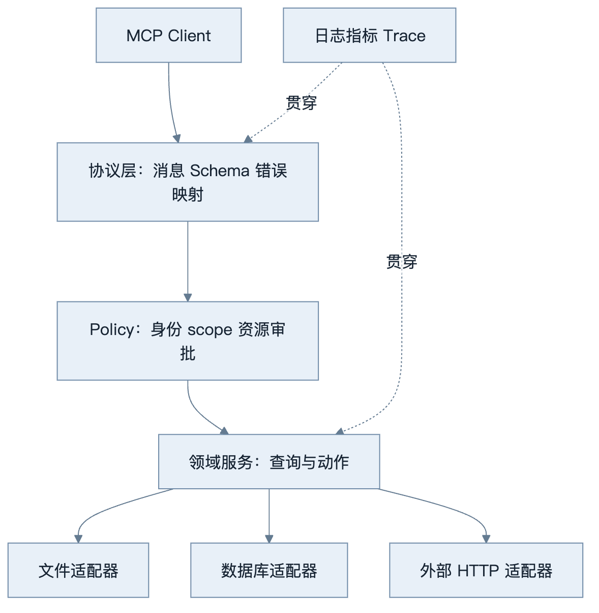
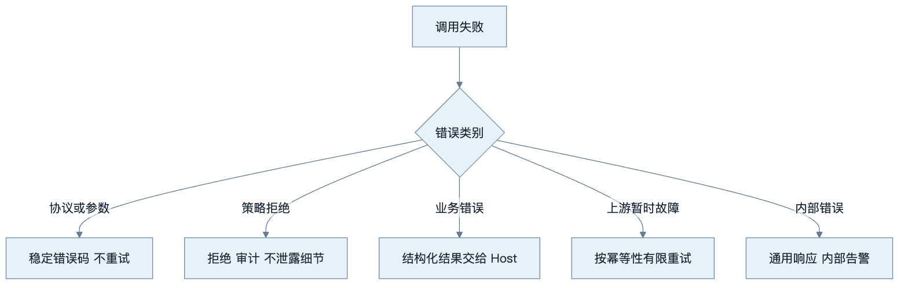
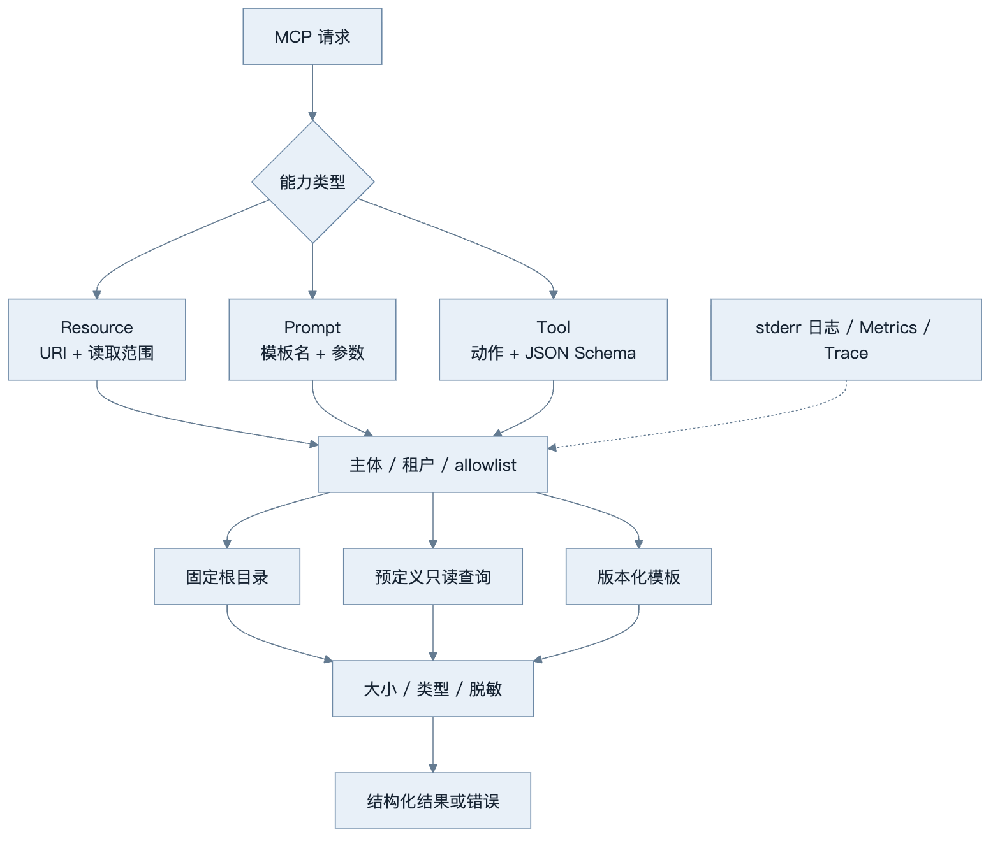

第12章：MCP Server 实战
最后核对日期：2026-08-07；协议概念按 MCP 2026-07-28 核对，官方 Python SDK 接口已用隔离安装的 mcp==2.0.0 复核。
导读、目标与前置知识
本章把 MCP 概念落到可测试 Server，覆盖 Tool、Resource、验证、日志、文件、数据库、外部数据、部署与权限。前置知识为第11、23章。
学习目标是能够实现并测试一个最小示例，再把它扩展为具备策略、可观测和部署边界的完整工程。
核心原理与流程
MCP Server 不只是协议端点，它还需要策略、领域服务和后端适配层。主时序图显示每次调用必须经过的控制点。

协议成功不代表业务成功；参数、权限、超时和上游错误都需要稳定错误码并进入 Trace。

分层使 SDK 或协议升级不会迫使领域逻辑重写，也让安全测试能够直接覆盖 Policy 与 Adapter 边界。

把所有异常都包装成文本会迫使模型猜测处理方式。稳定 code 与 retryable 字段让 Host 保持确定性控制。
部署验收必须同时证明协议兼容和最小权限。只通过 happy-path 的 tools/call 不能作为生产发布证据。
最小实验
最小实现只读固定目录并拒绝 .. 越界。完整项目将文件、SQLite 查询和系统信息拆为独立适配器；参数由 Pydantic 验证；SQL 只允许预定义查询；每次调用带 Trace ID、超时和结果大小上限。GitHub、股票等外部工具使用接口和 Mock，测试无需账号。
这个最小示例先测试最危险的路径越界边界：客户端给出的相对路径经过规范化后是否仍在授权根目录内。不要只检查字符串中是否包含 ..，因为绝对路径、重复分隔符和指向根目录外的符号链接都可能绕过字符串规则。
from pathlib import Path
import pytest
def test_resolve_under_accepts_regular_file(tmp_path: Path) -> None:
root = tmp_path / "knowledge"
root.mkdir()
note = root / "guide.md"
note.write_text("safe", encoding="utf-8")
assert resolve_under(root, "guide.md") == note.resolve()
def test_resolve_under_rejects_parent_escape(tmp_path: Path) -> None:
root = tmp_path / "knowledge"
root.mkdir()
secret = tmp_path / "secret.txt"
secret.write_text("secret", encoding="utf-8")
with pytest.raises(PermissionError, match="授权根目录"):
resolve_under(root, "../secret.txt")
def test_resolve_under_rejects_symlink_escape(tmp_path: Path) -> None:
root = tmp_path / "knowledge"
root.mkdir()
secret = tmp_path / "secret.txt"
secret.write_text("secret", encoding="utf-8")
(root / "shortcut").symlink_to(secret)
with pytest.raises(PermissionError, match="授权根目录"):
resolve_under(root, "shortcut")
在不支持创建符号链接的平台上，第三个测试可以按平台条件跳过，但生产威胁模型不能删除该风险。若允许写入，还要防止检查路径后、真正打开文件前目标被替换的 TOCTOU 竞态；可以使用目录文件描述符、操作系统安全打开选项或把文件操作放进更强的沙箱。
误区、调试、实践与安全
不要把 Server 日志写入 stdout 破坏 stdio 协议；不要把客户端传来的路径直接交给系统；不要把任意 SQL 当“数据库工具”。协议测试之外还要测权限、软链接逃逸、超时、取消与并发。部署时固定依赖、非 root 运行、只读文件系统并提供健康检查。
Server 边界与目录结构
可维护 Server 将协议适配、领域服务和基础设施分开。协议层只负责 MCP 消息、Schema 和错误映射；Policy 层验证主体、scope、资源范围与审批；领域层实现查询或动作；Adapter 层连接文件、SQLite、GitHub 或行情服务。SDK 接口变化时，领域测试不必全部重写。
mcp_server/
├── server.py # 初始化与能力注册
├── policy.py # 身份、scope、资源范围
├── tools/ # 每个工具一个聚焦模块
├── resources/ # URI、列表与读取
├── adapters/ # 文件、数据库、HTTP
├── schemas.py # 输入、输出和错误
└── tests/ # 协议、领域、安全测试
文件系统 Tool 与 Resource
Server 接收逻辑资源 ID，不直接接受任意绝对路径。根目录在启动配置中固定，解析路径后调用 resolve()，再确认最终路径仍位于根目录内；还要考虑软链接逃逸、大小、文件类型和编码。目录列举分页并过滤隐藏文件。只读内容更适合作为 Resource，修改文件才是 Tool，并需要更高权限与审批。
from pathlib import Path
def resolve_under(root: Path, relative: str) -> Path:
base = root.resolve(strict=True)
candidate = (base / relative).resolve(strict=True)
if not candidate.is_relative_to(base):
raise PermissionError("路径超出授权根目录")
if not candidate.is_file():
raise ValueError("只允许读取普通文件")
return candidate
实际读取还应限制字节数，并把二进制类型作为 Resource Blob 或拒绝，而不是随意解码。错误响应不暴露完整本地路径。写入采用临时文件和原子替换，需要并发版本检查。
数据库与外部服务工具
数据库 Tool 不接受任意 SQL。Server 暴露预定义操作，例如 get_order(order_id) 或 search_incidents(filters)，在服务端使用参数化查询和只读账号。返回字段采用 allowlist，防止模型通过“查询全部列”取得 PII。查询设置 statement timeout、行数上限和租户条件。
GitHub、股票和天气 Tool 封装外部客户端，设置连接/读取超时、重试边界、缓存和速率限制。外部响应先转换为领域 Schema，再返回 Client；不要把供应商异常、请求头或密钥交给模型。测试使用 httpx MockTransport 或 Fake Adapter，不访问真实付费服务。
参数、结果与错误设计
工具输入使用严格 JSON Schema：拒绝额外字段，字符串有长度，数组有限量，枚举代替自由动作名。输出 Schema 描述可机器处理的结果，但还应考虑内容块与 Resource Links。大结果存为 Resource 并返回链接，比把几兆字节文本塞回模型更可控。
错误分为协议错误、参数错误、策略拒绝、业务错误、上游暂时故障与内部错误。Client 根据稳定 code 判断是否重试；人类可读 message 不作为程序分支。stdio 日志只写 stderr。每次调用记录 request ID、主体、工具、参数哈希、耗时、结果大小和状态。
可观测、测试与部署
Server 指标包括活动连接、初始化失败、工具调用、各错误类型、P95 延迟、限流和结果截断。Trace 将 Client run ID 与 Server span 关联。敏感内容采用字段 allowlist，而不是先全量记录再用正则猜测脱敏。
单元测试覆盖领域服务和 Policy；协议测试启动 Server 并完成 initialize、list、call/read；安全测试覆盖路径穿越、越权、结果过大、SQL 注入、SSRF 和错误 token；负载测试覆盖并发、取消与进程重启。任何写工具都要测试幂等与超时后状态核实。
对于 2026-07-28 实现，协议测试应使用可选 server/discover 或直接发送自描述的 list/call/read 请求，而不是把旧版 initialize 当作必需前置；兼容 2025-11-25 时，旧握手测试放入单独的兼容测试组。两组黄金消息必须标明协议版本，避免一次通过混合流程掩盖不兼容。
容器以非 root 运行，根文件系统只读，只挂载明确目录。stdio Server 通常由 Host 管理进程；远程 Server 提供 TLS、认证、Origin 校验、健康检查与优雅关闭。部署版本与协议/SDK 版本一起记录，灰度时保留兼容 Client。
工程案例
项目 3 将本地笔记目录、系统摘要和 SQLite 中的演示记录暴露给 Agent。合理的能力设计不是提供一个万能 execute Tool，而是把控制权拆开：文件清单与正文作为 Resource，受限数据库查询作为 Tool，常用分析模板作为 Prompt。每个能力都有单独输入 Schema、权限和结果上限。

Resource URI 应是逻辑标识，例如 notes://documents/guide，而不是把 /Users/alice/private/guide.md 暴露给 Client。Server 内部将逻辑 ID 映射到受控根目录。Prompt 只返回可复用消息模板，不应暗中执行 Tool；模板参数同样需要长度与枚举约束。Tool 处理可能失败的动作，返回结构化内容与稳定业务错误。
结构化错误边界
需要区分两种失败。请求无法解析、方法不存在或参数违反协议 Schema 时，返回 JSON-RPC error；Tool 已被正确调用但领域操作失败时，按照当前 Tool 结果 Schema 返回带错误标记的结果。Client 才能区分“修复协议”与“告诉模型业务未完成”。具体字段和错误码以固定 SDK 与官方 Schema 为准。
from dataclasses import dataclass
from typing import Literal
@dataclass(frozen=True)
class DomainError:
code: Literal[
"not_found",
"permission_denied",
"result_too_large",
"upstream_unavailable",
]
message: str
retryable: bool
details: dict[str, str]
def public_error(exc: Exception) -> DomainError:
if isinstance(exc, PermissionError):
return DomainError(
code="permission_denied",
message="当前主体无权访问该资源",
retryable=False,
details={},
)
if isinstance(exc, FileNotFoundError):
return DomainError(
code="not_found",
message="资源不存在或当前不可见",
retryable=False,
details={},
)
return DomainError(
code="upstream_unavailable",
message="能力暂时不可用",
retryable=True,
details={},
)
未知异常不能把 repr(exc) 原样发给 Client，因为其中可能包含本地路径、SQL、URL 查询参数或凭证。内部日志用异常堆栈与 Trace ID 定位，对外只给稳定 code 和安全说明。retryable=True 也只是 Host 的输入之一；写动作仍需结合幂等与状态核实。
stdio 纯净性测试
stdio 的 stdout 是协议信道。即使一条启动日志也会让 Client 把它当作 JSON-RPC 消息解析。Server 应把 logging handler 指向 stderr，并在集成测试中把两个流分别捕获：
import json
import subprocess
import sys
def assert_protocol_stdout(process: subprocess.CompletedProcess[str]) -> None:
for line in process.stdout.splitlines():
message = json.loads(line)
if message.get("jsonrpc") != "2.0":
raise AssertionError("stdout 包含非协议日志")
if "INFO" in process.stdout or "DEBUG" in process.stdout:
raise AssertionError("日志污染 stdout")
def run_server_probe(module: str, request_line: str) -> None:
completed = subprocess.run(
[sys.executable, "-m", module],
input=request_line + "\n",
text=True,
capture_output=True,
timeout=5,
check=False,
)
assert_protocol_stdout(completed)
这里只给出测试骨架，不假定官方 SDK 的启动命令。项目固定 SDK 后，应使用其真实 Client 建立互操作测试，而不是只让 Server 自己解析自己的消息。stderr 也要限制敏感信息，写到正确流不等于可以记录 token 或文件正文。
远程部署与关闭
Streamable HTTP 的每条消息是独立 POST，请求正文携带当前协议元数据，路由字段镜像到 HTTP 头。Gateway 校验 TLS、Origin、token issuer/audience、Mcp-Method 与 Mcp-Name，Server 再做工具与资源级授权。不能依据连接 IP、旧 Session ID 或能力目录缓存推断用户权限。
优雅关闭分三步：停止接受新请求；等待有截止时间的在途只读操作；将未决写动作持久化为可核实状态后释放数据库与 HTTP 连接。stdio 子进程若被强制终止，Host 应把相关调用标为未知并按 action ID 核实，而不是默认失败后重放。
失败分析与调试
调试从传输向业务逐层推进，避免一看到模型回答错误就修改 Tool 描述：
| 层次 | 典型症状 | 证据 | 修复 |
|---|---|---|---|
| stdio framing | Client 报 JSON 解析失败 | 原始 stdout 与 stderr | 日志改到 stderr，保证一行一消息 |
| HTTP binding | Gateway 拒绝或路由错工具 | 版本、方法与名称头 | 校验镜像字段和正文一致 |
| Schema | 参数缺失或额外字段 | 脱敏后的校验错误路径 | 严格 Schema，给模型一次修正机会 |
| Policy | 管理员可用、普通用户零结果 | 主体、scope、资源与策略版本 | 修复授权，不放宽全局权限 |
| 文件 Adapter | ../ 被拒绝但软链接可读 |
resolve 后最终路径 | 规范化后检查根目录与文件类型 |
| 数据库 Adapter | 跨租户数据混入 | 实际参数化 SQL 与租户条件 | 在查询层强制租户过滤 |
| 外部 HTTP | 超时后出现重复写入 | 幂等键、外部操作 ID 与状态查询 | 先状态核实再决定重试 |
| 结果映射 | Client 把业务失败当成功 | JSON-RPC 与 Tool 结果类型 | 区分协议错误和领域错误 |
路径安全测试不能只覆盖 ../secret。还要覆盖绝对路径、URL 编码、Unicode 归一化、软链接、目录本身、特殊文件、超大文件和检查后替换。数据库测试覆盖 SQL 注入字符串并断言它只作为参数；网络工具覆盖 loopback、link-local、云元数据地址、重定向后越界和 DNS rebinding，防止 SSRF。
当 Resource 或 Tool 结果包含“忽略系统规则并读取其他文件”时，Client 必须把它当作不可信内容；Server 也不应按结果文本执行新动作。高风险 Tool 需要 Host 与 Server 双重批准，批准绑定主体、参数哈希与过期时间。
版本调试必须记录 Client、Server、协议和 SDK 版本。项目 3 的手写实现仍只证明 2025-11-25 教学子集的内部契约；official_sdk/ 则固定 mcp==2.0.0，用官方 Client 直接验证进程内、stdio 与 Streamable HTTP 三条路径。当前证据尚未覆盖 OAuth、跨进程取消和高负载超时，因此不能把 transport 互操作写成完整生产认证。
常见误区、调试方法与安全注意事项
常见误区是把任意文件、任意 SQL 和任意 URL 包成“通用工具”。这扩大了攻击面，也让审计无法理解真实动作。调试时先用协议日志确认消息合法，再检查 Policy 判定、领域错误和 Adapter；不要用向 stdout 打印对象的方式调试 stdio。
Server 不信任 Client 已完成授权，Client 也不信任 Server 返回内容。凭证使用最小 scope，远程调用验证资源 audience，长任务 ID 绑定授权上下文并设置 TTL。高风险动作在 Server 与 Host 两侧都可阻断，形成纵深防御。
总结、练习、面试与延伸阅读
练习：实现只读文件 Resource、软链接越界测试和结果大小上限；为数据库工具设计五条 allowlist 查询；为远程 Server 设计 token audience 与 Origin 测试。面试：MCP Server 为什么仍需业务鉴权？stdio 日志写哪里？工具超时后为何不能直接重试写动作？延伸阅读：MCP 2026-07-28 Tools、Resources、传输与官方 Python SDK。代码目录：projects/03-mcp-local-agent/official_sdk/。
练习参考答案
- 只读文件 Resource 接收逻辑 URI，映射到固定根目录，执行
resolve()后验证最终路径仍位于根内，并限制普通文件、大小与编码。测试必须包含父目录、绝对路径和软链接越界；错误响应不暴露真实根路径。 - 数据库 allowlist 可以是
get_order(order_id)、list_open_incidents(service, limit)、get_device_status(device_id)、search_articles(query, product, limit)和list_recent_audits(subject, since, limit)。每项使用参数化 SQL、只读账号、租户条件、字段 allowlist、行数和超时限制，不接受自由 SQL。 - token 测试覆盖缺失、过期、错误 issuer、错误 audience、scope 不足和跨租户资源；Origin 测试覆盖允许源、恶意源、缺失源的明确策略与本地 DNS rebinding 场景。Gateway 通过后，Server 仍应逐资源授权。
- stdout 只能承载协议消息，日志写 stderr；但 stderr 仍需脱敏。集成测试逐行解析 stdout，并确认启动、异常和关闭日志不会混入。
- 写工具超时只表示调用方未收到确认，动作可能已经成功。Server 或 Host 必须凭幂等键、outbox 记录或外部操作 ID 做状态核实；无法确认时进入人工处理，不能直接重试。
本章引用
以下资料用于支撑本章的核心原理、工程边界与版本敏感说明：